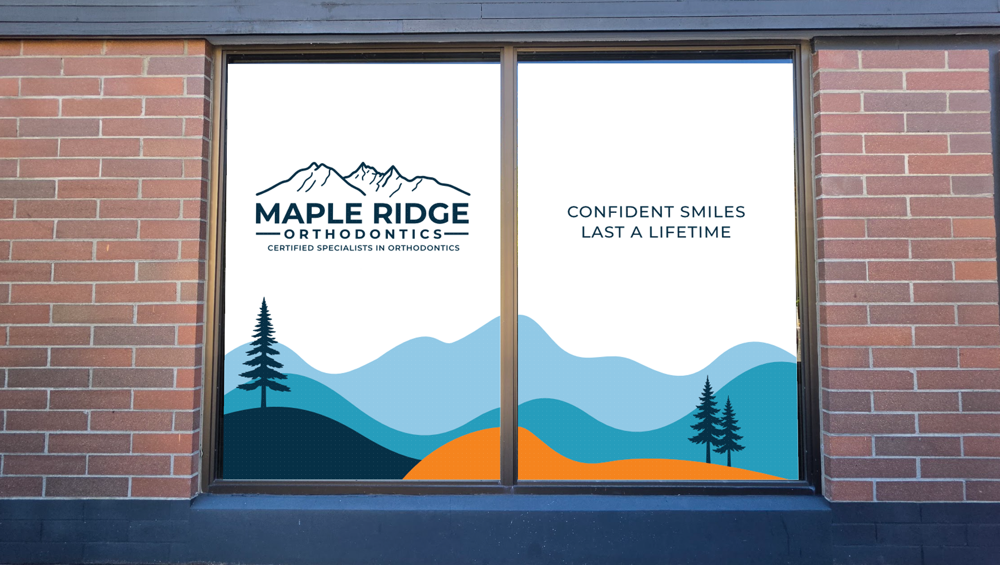
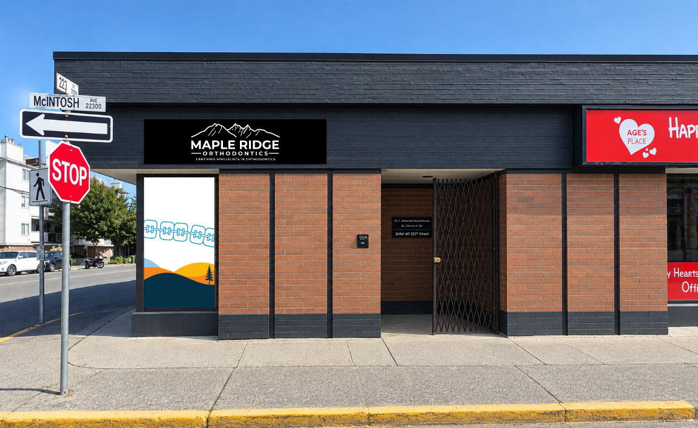
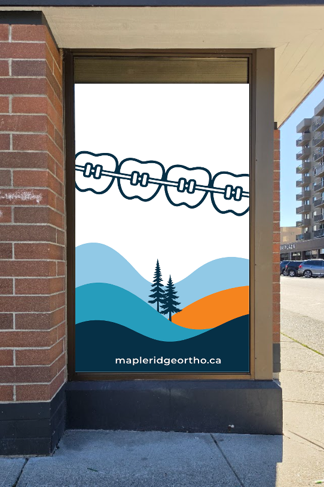
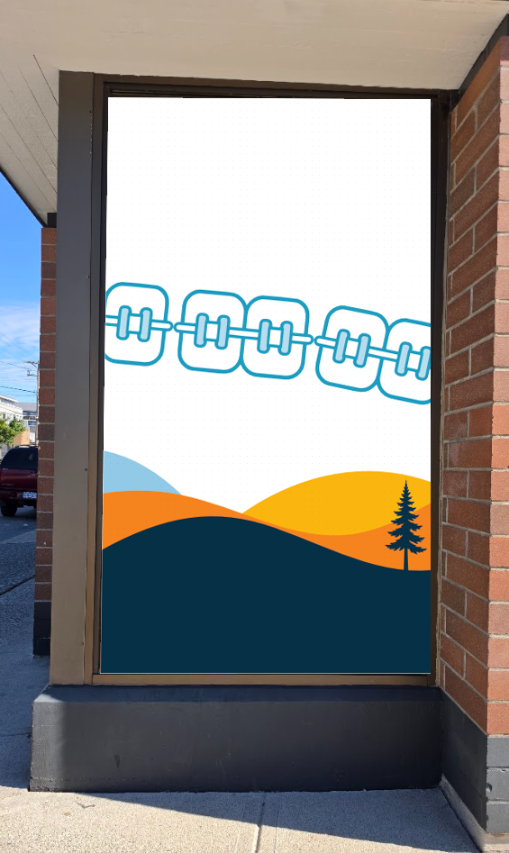

Overall reference
Entire artwork spread
Final supplied overview of the complete window-graphics spread.
Maple Ridge Orthodontics · Artwork approval
Window graphics and exterior signage options, presented together for one consolidated review.
These pages show the supplied final mockups only. No production release, print specification, or installation authorization is implied by this review set.
Overall reference
Final supplied overview of the complete window-graphics spread.

Package 01
Final supplied visual for client review.

Package 02
Final supplied visual for client review.

Package 03
Final supplied visual for client review.

Package 04
Final supplied visual for client review.

Package 05
Final supplied visual for client review.
Exterior signage · option 1
Final supplied artwork. The mountain mark, MAPLE RIDGE, and ORTHODONTICS are specified as 1/2-inch dimensional letters; the certification line remains flat lettering.
Exterior signage · option 2
All elements to be 1/2-inch dimensional letters.
Please confirm the overall spread, each window graphic, and one exterior signage option. Artwork remains approval-pending until written client confirmation is received.